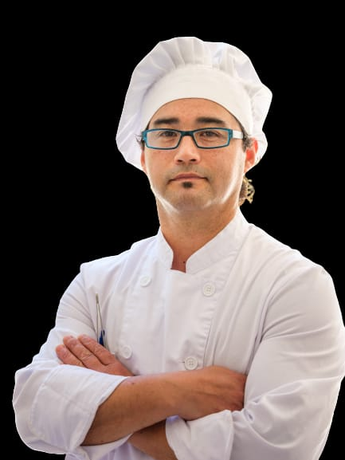

We're passionate food enthusiasts on a mission to discover and share the best culinary experiences.
Founded by ACST, Foodie Hunter was born from a love for exploring new flavors and hidden gems. Our team of foodies scour the city to bring you:
- Honest reviews of restaurants, cafes, and eateries
- Insider tips on must-try dishes and secret menus
- Exclusive interviews with chefs and food experts
- Mouth-watering photos to inspire your next meal
To become the ultimate food companion for adventurers and food lovers alike.
1. Authenticity: We only recommend what we truly love.
2. Diversity: Exploring cuisines from every corner of the globe.
3. Community: Sharing our passion with fellow foodies.
Subscribe to our blog, follow us on social media, or contact us to share your own foodie adventures.